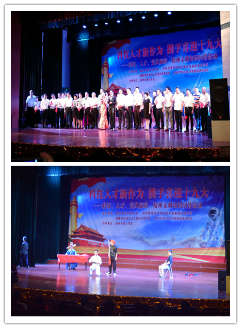

科技人才新作为 携手共迎十九大
为进一步贯彻落实党的十八届五中、六中全会和习近平总书记系列重要讲话精神，深入推进“两学一做”学习教育制度化常态化和开展“机关党旗红 、五个泉州”在行动的主题实践活动，营造和谐氛围，以良好的精神风貌，喜迎党的十九大胜利召开。9月29日，由泉州市科技局、泉州华中科技大学智能制造研究院等多家研究院在泉州青少年宫共同举办“科技人才新作为 携手共迎十九大”暨科技、人才、党风廉政和精神文明知识竞答活动。
我院代表队以小品《吃面》向各参会领导及观众展现出“爱岗敬业”的当代精神。此次活动以多样化的形式开展，围绕深入实施创新驱动发展战略，实施人才“港湾计划”，构筑“产业集聚人才、人才引领产业”的发展新格局，推进党风廉政建设，提升精神文明创建水平等方面进行知识竞答，整个活动弘扬主旋律，传播正能量，营造积极向上、热烈喜庆的浓厚氛围，掀起科技人才的创新热情和喜迎党的十九大的热潮。

泉州华中科技大学智能制造研究院
2017年9月30日